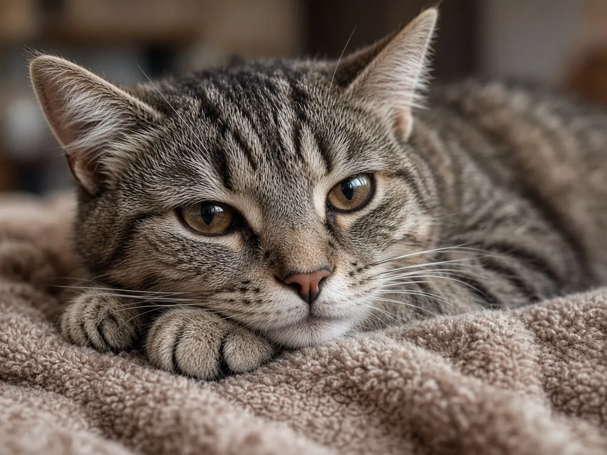

Senior cat care: health checks, common diseases and home changes
Veterinary guidelines class cats over 10 years old as seniors, and cats aged 7 to 10 as mature adults. The 2021 AAFP Feline Senior Care Guidelines recommend a vet visit every six months for cats aged 10 to 15 and every four months for cats over 15, because the common diseases of old age, such as chronic kidney disease, an overactive thyroid and arthritis, are much easier to manage when caught early.


Cat life stages
| Life stage (AAHA/AAFP 2021) | Age | Suggested vet visits |
|---|---|---|
| Kitten | Birth up to 1 year | Several visits for vaccines and neutering |
| Young adult | 1 to 6 years | At least yearly |
| Mature adult | 7 to 10 years | At least yearly; discuss baseline blood and urine tests |
| Senior | Over 10 years | Every 6 months (10 to 15 years); every 4 months over 15 (AAFP 2021) |
| End of life | Any age | As needed, focused on comfort and quality of life |
Ages are guides, not rules: some 12 year old cats are as fit as a mature adult, and the guidelines leave room for your vet to treat each cat individually. Cats with chronic illness may need visits more often.
How long do cats live?
In UK veterinary records the median age at death was 14 years, with a quarter of cats living to 17 or older (O'Neill et al., 2015). Life tables built from 2019 deaths give a newborn cat a life expectancy of 11.74 years, 12.51 for females and 11.18 for males, and link neutering, being crossbred and staying near a typical body weight with longer lives (Teng et al., 2024). So a cat entering its senior years at 10 often has many good years ahead. Read the full breakdown, including breed figures, in how long do cats live?
Common diseases in older cats
Chronic kidney disease (CKD)
Cornell describes CKD as one of the most prevalent diseases in older cats, affecting up to 40% of cats over 10 and 80% of cats over 15. Early on there are often no signs; later, cats drink and pee more, lose weight and appetite, and may develop high blood pressure and anemia. Age is the only known risk factor, which is why regular blood and urine tests matter for every senior.
Hyperthyroidism (overactive thyroid)
A common disease of middle aged and older cats. The classic signs are weight loss despite a bigger appetite, increased thirst and urination, and sometimes vomiting, diarrhea, restlessness and an unkempt coat. It is diagnosed with a blood test and is very treatable.
Arthritis (osteoarthritis)
International Cat Care notes that arthritis is common in older cats and often missed, because cats hide pain and rarely limp. Look instead for hesitating before jumping, smaller jumps, difficulty with stairs, stiffness after rest, grooming less and accidents outside the litter box. A short video of your cat moving at home can help your vet.
Diabetes
Excess weight is a major risk factor. Signs include drinking and peeing more, weight loss and a big appetite. Many diabetic cats are managed with diet and insulin.
Dental disease
Very common by middle age. Painful mouths can make cats eat less or drop food; senior checkups should always include the teeth.
Behavior changes
Night time crying, confusion, getting lost in familiar places or changes in social behavior can reflect pain, high blood pressure, thyroid disease or age related cognitive decline. Report them to your vet rather than putting them down to old age.
Making home easier for an older cat
- Litter box: at least one with a low entry side, on every floor the cat uses.
- Access: ramps, steps or a chair next to favorite high spots; rugs on slippery floors.
- Warmth: soft, warm beds out of drafts, at ground level as well as higher up.
- Food and water: several water bowls or a fountain; raised bowls if bending is uncomfortable; your vet may suggest a diet for kidney or weight issues.
- Grooming help: older cats groom less, so brush gently and check claws, which can overgrow.
- Routine: keep things predictable and weigh your cat monthly; unexplained weight loss is a reason to call the vet.
Senior cat FAQ
At what age is a cat considered senior?
The 2021 AAHA/AAFP Feline Life Stage Guidelines define a senior cat as one over 10 years old. Cats aged 7 to 10 are mature adults.
How long do cats usually live?
Large UK veterinary record studies found a median age at death of 14 years and a life expectancy at birth of about 11.7 years. Many cats live into their late teens; see how long do cats live?
How often should a senior cat see the vet?
The 2021 AAFP Feline Senior Care Guidelines recommend every six months for cats aged 10 to 15 and every four months for cats over 15, more often if the cat has a chronic condition.
Why is my old cat losing weight but eating more?
Weight loss with a good or increased appetite is a classic sign of hyperthyroidism, and can also occur with diabetes. Both are diagnosed with blood tests, so book a vet visit.
How can I tell if my cat has arthritis?
Cats rarely limp. Watch for hesitating or refusing to jump, using stairs slowly, stiffness after rest, grooming less and toileting outside the box, and mention any of these to your vet.
Sources
- AAHA/AAFP 2021 Feline Life Stage Guidelines: Feline life stage definitions
- Ray M. et al. (2021) 2021 AAFP Feline Senior Care Guidelines. J Feline Med Surg
- AVMA News: AAFP releases updated guidelines on care of senior cats (2021)
- Cornell Feline Health Center: Chronic Kidney Disease
- Cornell Feline Health Center: Hyperthyroidism in Cats
- Cornell Feline Health Center: Feline Diabetes
- International Cat Care: Arthritis in cats
- Cornell Feline Health Center: Feline Dental Disease
- O'Neill D.G. et al. (2015) Longevity and mortality of cats attending primary care veterinary practices in England. J Feline Med Surg 17(2):125 to 133
- Teng K.T. et al. (2024) Life tables of annual life expectancy and risk factors for mortality in cats in the UK. J Feline Med Surg 26(5)
Cite this page
Students and teachers are welcome to cite this page. Add your access date if your teacher or style guide asks for one.
APA (7th ed.)
MeowWise. (2026, October 20). Senior cat care: health checks, common diseases and home changes. https://meowwise.com/senior-cats.html
MLA (9th ed.)
“Senior cat care: health checks, common diseases and home changes.” MeowWise, 20 Oct. 2026, meowwise.com/senior-cats.html.
Chicago (bibliography)
MeowWise. “Senior cat care: health checks, common diseases and home changes.” Last modified October 20, 2026. https://meowwise.com/senior-cats.html.
General education, not veterinary advice. If you are worried about your cat, contact your veterinarian; in an emergency, go to the nearest emergency vet.